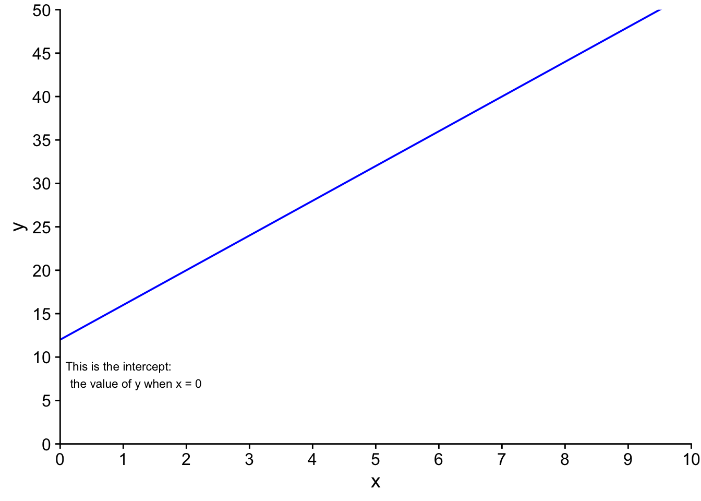
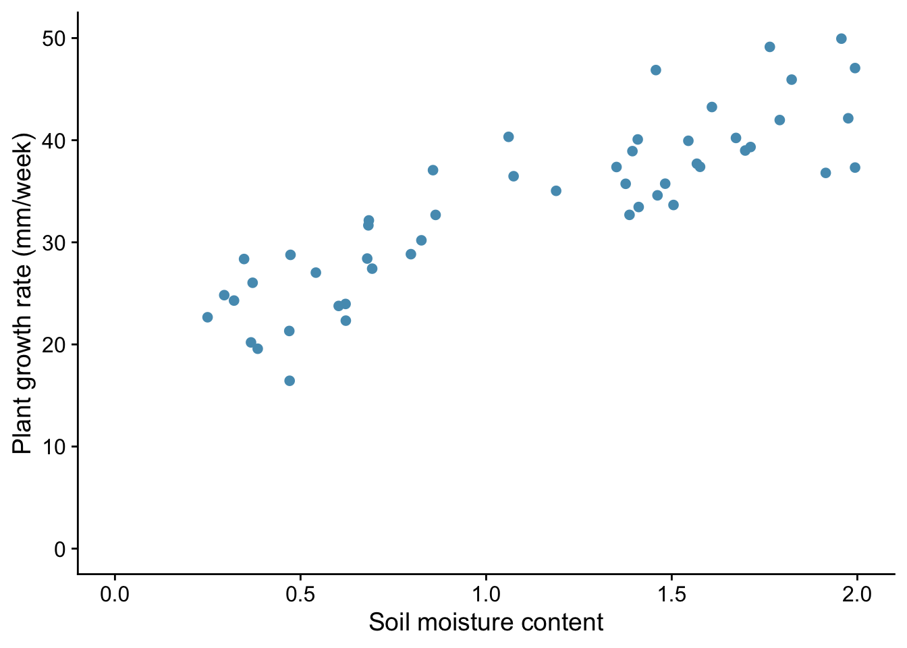
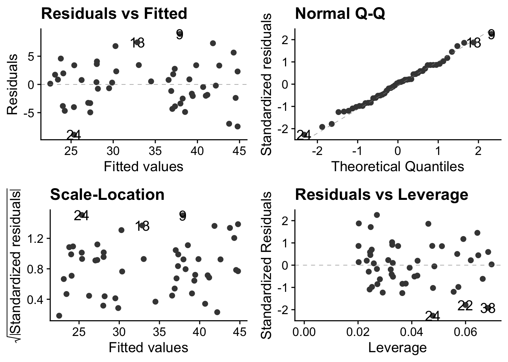
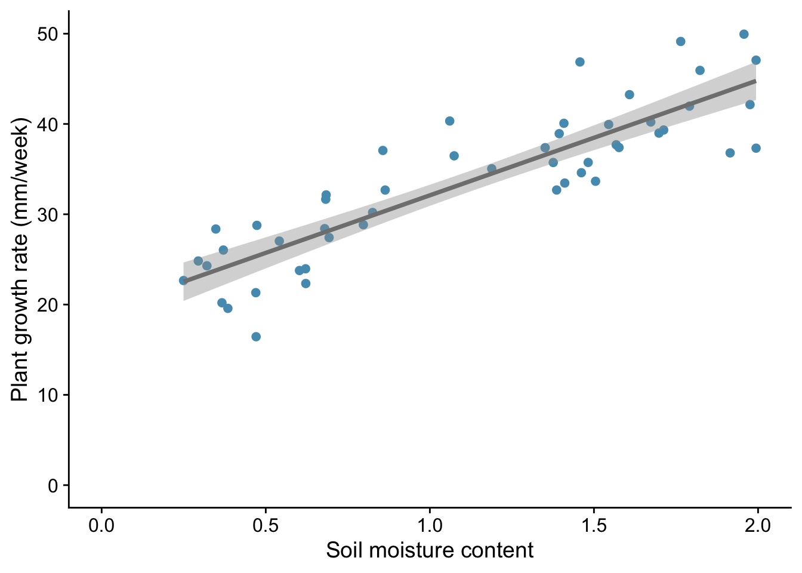
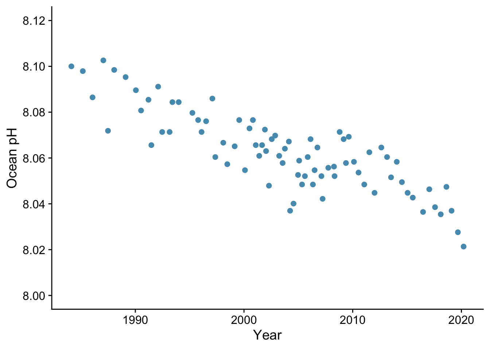
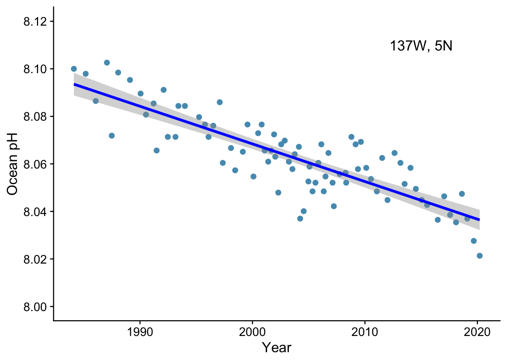
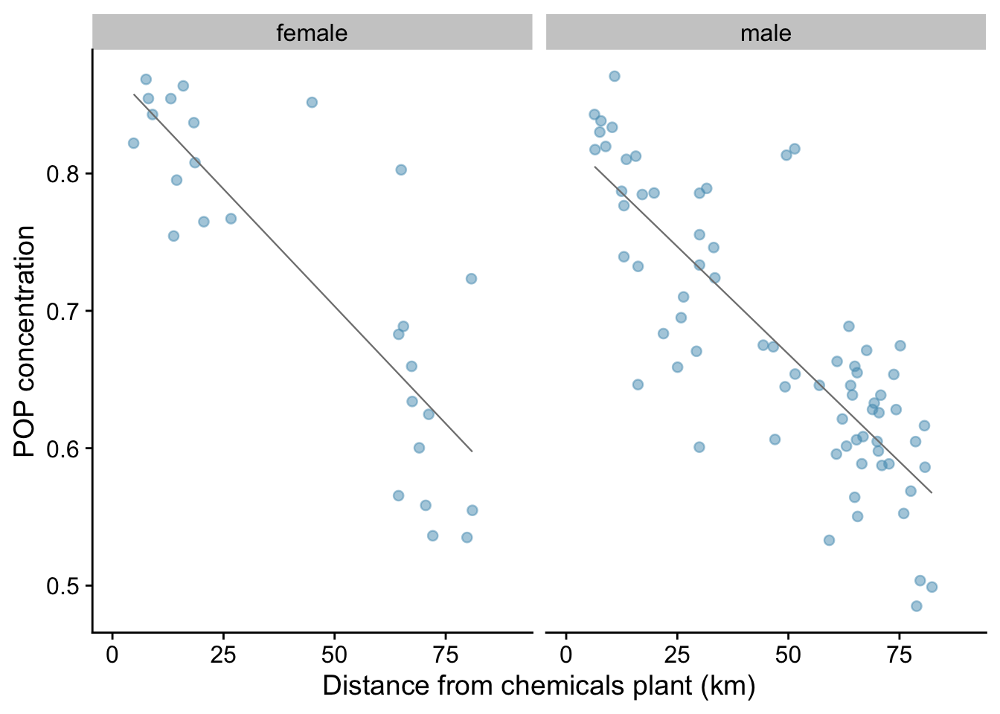

6 Simple linear regression
6.1 Introduction
A class of analytical models that is often used goes under the name General Linear Models. It includes linear regression, multiple regression, ANOVA, ANCOVA, Pearson correlation and t-tests. We will meet all these next year.
Despite appearances, these models all share the same method. They share a common framework for estimation (least squares) and a common set of criteria that the data must satisfy before they can be used. These criteria centre around the idea of normally distributed residuals. Thus, an important stage of any analysis that uses linear models is that compliance with these assumptions is checked, as part of the Plot -> Model -> Check Assumptions -> Interpret -> Plot again workflow.
Here, we will go through examples of simple linear regression - suitable for trend data where we wish to predict a continuously varying response, given a value of a single continuous explanatory variable.
We will us R to do this and don’t hide the details, but note that you are not required this year to memorise any of this. If the R piques your interest - great! - if not, ignore it, and concentrate on what we learn from the plots and the outputs of the analysis.
6.2 Example - plant growth
As a first example, we ask the question: does plant growth rate depend on soil moisture content?
We predict that more moisture will probably allow higher growth rates. We note that this means there should be a clear relationship between the variables, one that should be apparent if we plot the response (dependent) variable - plant growth rate - against the explanatory (independent) variable - soil moisture content. We also note that both the explanatory variable and the dependent variables are continuous - they do not have categories.
What we might want to do in linear regression is be able to predict the value of the dependent variable, knowing the value of the independent variable, using a linear model. Just as often, we simply want to determine the sensitivity of the dependent variable to changes in the independent variable. In practice, doing either of these things means drawing a ‘best fit’ straight line through the data and determining the intercept and gradient of this line. It is the gradient that tells us the sensitivity of the dependent variable to chnges in the independent variable, and that is what we most often look out for in the analysis.
Equation of a straight line
6.2.1 The data
Suppose that we have a data set to explore our question. If we read this data into R from a .csv file or an Excel .xlsx spreadsheet, this is what it might tell us:
| soil.moisture.content | plant.growth.rate | |
|---|---|---|
| 1 | 0.470 | 21.3 |
| 2 | 0.541 | 27.0 |
| 3 | 1.698 | 39.0 |
| 4 | 0.826 | 30.2 |
| 5 | 0.857 | 37.1 |
| 6..49 | ||
| 50 | 0.371 | 26.0 |
We see that the data set contains two columns of continuous variables, as expected. One, called soil.moisure.content has 50 rows of values for the soil moisture content while the other, called plant.growth.rate contains the corresponding 50 values for growth rate, in mm/week.
6.2.2 Plot the data
Let’s do a scatter plot of plant growth rate on the vertical (y) axis against soil moisture content on the horizontal (x) axis:

From the plot, we note that:
- there is an upward trend that is plausibly linear within this range of soil misture content. The more moisture there is in the soil, the greater the growth rate of the plants appears to be.
- the variance of the data, that is the range of vertical spread is approximately constant for the whole range of soil moisture content. This is one of the key criteria that data must satisfy if we are to analyse them using a linear model such as simple linear regression.
- we can estimate the intercept and gradient of a best fit line just by looking at the plot. Roughly speaking, the moisture content varies from 0 to 2, while the growth rate rises from 20 to 50, a rise of about 30. Hence the gradient is about 30/2 = 15 mm/week, while the intercept is somewhere between 15 mm and 20 mm / week.
It is always good practice to examine the data before you go on to do any statistical analysis. For all but the smallest data sets, that means plotting them.
6.2.3 Make a simple model using linear regression
We use the function lm() to do this, and we save the results in an object to which we give the name model_pgr. This function needs a formula and some data as its arguments:
This reads: ‘Fit a linear model, where we hypothesize that plant growth rate is a function of soil moisture content, using the variables from the plants data frame.’
6.2.4 Check assumptions
Before we rush into interpreting the output of the model, we need to check whether it was valid to use a linear model in the first place. Whatever the test within which we are using a linear model, we should do the necessary diagnostic checks at this stage.
You can do this using tests designed for the purpose, but I prefer to do it graphically, using a function autoplot() from the package ggfortify. You give this the model we have just created using lm() and it produces four very useful graphs. I suggest that, after once installing ggfortify you include the line library(ggfortify) at the start of every notebook.
Here is how you use it:

The theme_cowplot() part is not necessary, but it gives the plots a nice look, so why not?
These plots are all based around the `residuals’, which is the vertical distance between observed values and fitted values ie between each point and the best fit line through the points - the line which the linear model is finding for us, by telling us its intercept and gradient.
In simple linear regression, the best fit line is the one that minimises that sum of the squared residuals.
So what do these plots mean?
- left: This tells you about the structure of the model. Was it a good idea to try to fit a straight line to the data? If not, for example because the data did follow a linear trend, then there will be humps or troughs in this plot.
- right: This evaluates the assumption of normality of the residuals. The dots are the residuals and the dashed line is the expectation under the normality assumption. This is a much better way to check normality than making a histogram of the residuals, especially with small samples.
In the case of these data, we are good to go! There is no discernible pattern in either of the left-hand plots, the qq-plot is about as straight as you ever see with real data, and there are no points exerting undue high influence.
6.2.5 Interpretation of the model
Now that we have established that the data meet the criteria required for the model to be valid, we can go ahead and inspect its output. We will do this using two tools that we also use for every other general linear model we implement (t-test, ANOVA etc). These are anova() and summary()
Let us first use anova():
Analysis of Variance Table
Response: plant.growth.rate
Df Sum Sq Mean Sq F value Pr(>F)
soil.moisture.content 1 2521 2521 156 <2e-16 ***
Residuals 48 775 16
---
Signif. codes: 0 '***' 0.001 '**' 0.01 '*' 0.05 '.' 0.1 ' ' 1The F value here is an example of a ‘test statistic’, a number that a test calculates from the data, from which it is possible to further calulate how likely it is that you would have got the data you got if the null hypothesis were true. This particular test statistic is the ratio of the variation in the data that is explained by the explanatory variable to the leftover variance. The bigger it is, the better the job that the explanatory variable is doing at explaining the variation in the dependent variable. The p value, which here is effectively zero, is the chance you would have got an F value this big or bigger from the data in the sample if in fact there were no relationship between plant growth rate and soil moisture content. If the p value is small (and by that we usually mean less than 0.05) then we can reject the null hypothesis that there is no relationship between plant growth rate and soil moisture content.
Hence, in this case, we emphatically reject the null: there is clear evidence that plant growth rate is at least in part explained by soil moisture content.
Now we use the summary() function:
Call:
lm(formula = plant.growth.rate ~ soil.moisture.content, data = plants)
Residuals:
Min 1Q Median 3Q Max
-8.909 -3.075 0.226 2.657 8.941
Coefficients:
Estimate Std. Error t value Pr(>|t|)
(Intercept) 19.35 1.28 15.1 <2e-16 ***
soil.moisture.content 12.75 1.02 12.5 <2e-16 ***
---
Signif. codes: 0 '***' 0.001 '**' 0.01 '*' 0.05 '.' 0.1 ' ' 1
Residual standard error: 4.02 on 48 degrees of freedom
Multiple R-squared: 0.765, Adjusted R-squared: 0.76
F-statistic: 156 on 1 and 48 DF, p-value: <2e-16This gives us estimates of the intercept (19.348) and gradient (12.750) of the best fit line through the data. The null hypothesis is that both these values are zero, and the p-value is our clue as to whether we can reject this null. Here, in both cases, we clearly can.
We also see the Adjusted R-squared value of 0.7599. This is the proportion of the variance in the dependent variable that is explained by the explanatory variable. Thus it can vary between 0 and 1. A large value like this indicates that soil moisture content is a good predictor of plant growth rate.
6.2.6 Back to the figure
Typically, a final step in our analysis involves including the model we have fitted into the original figure, if that is possible in a straightforward way. In the case of simple linear regression, it is. It means adding a straight line with the intercept and gradient displayed by the summary() function. We do this by adding a line geom_smooth(method = "lm") to our plot code:

This gives both a straight line and the ‘standard error’ of that line - meaning, roughly speaking, the wiggle room within which the ‘true’ line , for the population as opposed to this sample drawn from it, probably lies.
6.2.7 Report the result
We would likely want to include this plot in our report, along with a statement like:
We find evidence for a linear increase in plant growth rate with soil moisture content (p<0.001), with an additional 12.75 mm of growth per unit increase in soil moisture content.
6.2.8 Conclusion
We have carried out a simple linear regression on continuous data. This is an example of a general linear model. We first plotted the data, then we used lm() to fit the model. Next we inspected the validity of the model using autoplot. We then inspected the model itself using first anova() then summary(). Finally we included the output of the model on the plot, in this case by adding to it a straight line with the intercept and gradient determined by the regression model, and reported the result in plain English.
6.3 Example - ocean pH
Here we use data from Figure 5.20 of AR6, WG1 from the IPCC. It shows ocean pH measurements from a location (137\(^{\circ}\)E, 5\(^{\circ}\)N) in the western Pacific between 1980 and 2020.
Your task is to assess whether there is a significant linear trend in pH with time and if so to determiine the change in pH per year or per decade during the forty year period from 1980 to 2020.
Here is a glimpse of the data we have:
| year | pH | |
|---|---|---|
| 1 | 1984 | 8.10 |
| 2 | 1985 | 8.10 |
| 3 | 1986 | 8.09 |
| 4 | 1987 | 8.10 |
| 5 | 1987 | 8.07 |
| 6..80 | ||
| 81 | 2020 | 8.02 |
6.3.1 Plot data
If we plot pH gainst year we get:

- Is there a linear trend?
- Is the scatter in the vertical direction about the same across the whole range of year?
6.3.2 Fit linear model
Supposing we do think there is a linear trend, we will want to determine the change in pH per year or per decade during the forty year period from 1980 to 2020.
If we decide to use R to do this we would fit a linear model.
This will tell us what we want to know and do so reliably providing the criteria for its use are satisfied. These criteria are, principally:
- that there is a plausibly linear relationship.
- that the variance of the response is approximately constant across the range of the explanatory variable
- That the residuals are plausibly drawn from a normal distribution.
We can see from the plot above that the first and the second criteria are satisfied. What about the third? This is best checked using a quantile-quantile plot, which should be roughly linear. We will skip that here and move on to the output of the linear model created by R:
6.3.3 Inspect model
ANOVA
Analysis of Variance Table
Response: pH
Df Sum Sq Mean Sq F value Pr(>F)
year 1 0.0169 0.01694 200 <2e-16 ***
Residuals 79 0.0067 0.00008
---
Signif. codes: 0 '***' 0.001 '**' 0.01 '*' 0.05 '.' 0.1 ' ' 1Are we OK to reject the null hypothesis that pH does not change over this time period?
Summary
Call:
lm(formula = pH ~ year, data = pH)
Residuals:
Min 1Q Median 3Q Max
-0.024709 -0.004964 0.000219 0.006039 0.016881
Coefficients:
Estimate Std. Error t value Pr(>|t|)
(Intercept) 11.234405 0.224330 50.1 <2e-16 ***
year -0.001583 0.000112 -14.1 <2e-16 ***
---
Signif. codes: 0 '***' 0.001 '**' 0.01 '*' 0.05 '.' 0.1 ' ' 1
Residual standard error: 0.00921 on 79 degrees of freedom
Multiple R-squared: 0.717, Adjusted R-squared: 0.713
F-statistic: 200 on 1 and 79 DF, p-value: <2e-16- What is the change in ocean pH per decade over the last four decades?
- Is this change statistically significant?
- Does the linear model account for much of the variance in the data?
6.3.4 Replot the data, model included

- How would you report this result?
- Would it be wise to assume that this linear relationship persists beyond the date range of the data, in either direction (past and/or future)?
6.4 Example: Persistent Organic Pollutants in Dolphin Blubber
A chemicals plant on the east coast of the USA is suspected of leaking POPs into coastal waters. These might be expected to dilute with distance from the coast but where they are present they would be likely to concentrate in apex predators such as dolphins. A study by Balmer and co-workers (2011) measured the concentration of POPs in the blubber of bottlenose dophins as a function of the mean distance from the coast of their range of movement.
| sex | distance_km | pop_conc | |
|---|---|---|---|
| 1 | male | 6.37 | 0.843 |
| 2 | male | 6.49 | 0.817 |
| 3 | male | 7.56 | 0.830 |
| 4 | male | 7.83 | 0.838 |
| 5 | male | 8.89 | 0.820 |
| 6..96 | |||
| 97 | female | 81.00 | 0.555 |
When they plotted this data for each sex, they found that the POP concentration appeared to decline linearly with distance from the coast:

A regression analysis enables us to see more precisely what the decline in POP concentration is per extra km distance from the coast, and to predict what the POP concentration would be for any chosen distance within the distance range covered by the data. Here is the output of a regression anlysis for the females within the data collected by Balmer et al.
Call:
lm(formula = pop_conc ~ distance_km, data = pop_females)
Residuals:
Min 1Q Median 3Q Max
-0.09155 -0.03867 -0.00445 0.02551 0.15055
Coefficients:
Estimate Std. Error t value Pr(>|t|)
(Intercept) 0.87401 0.02337 37.4 < 2e-16 ***
distance_km -0.00342 0.00045 -7.6 7.8e-08 ***
---
Signif. codes: 0 '***' 0.001 '**' 0.01 '*' 0.05 '.' 0.1 ' ' 1
Residual standard error: 0.0648 on 24 degrees of freedom
Multiple R-squared: 0.706, Adjusted R-squared: 0.694
F-statistic: 57.7 on 1 and 24 DF, p-value: 7.81e-08- What is the change in POP concentration with each 1 km increase in mean distance?
- What is the predicted POP concentration next to the plant (distance = 0 km)?
- What is the predicted POP concentration at a distance of 50 km?
- What proportion of the variability in POP concentrtion with distance is explained by this linear model?